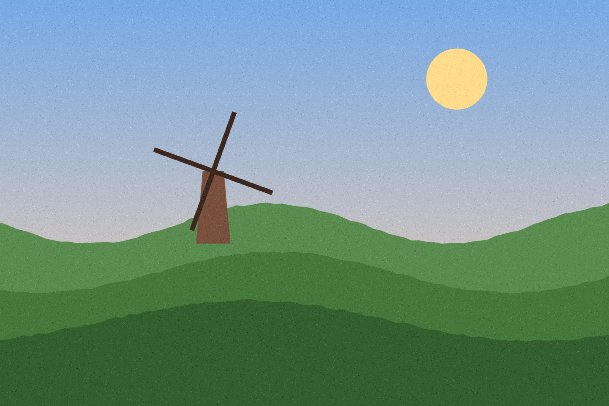
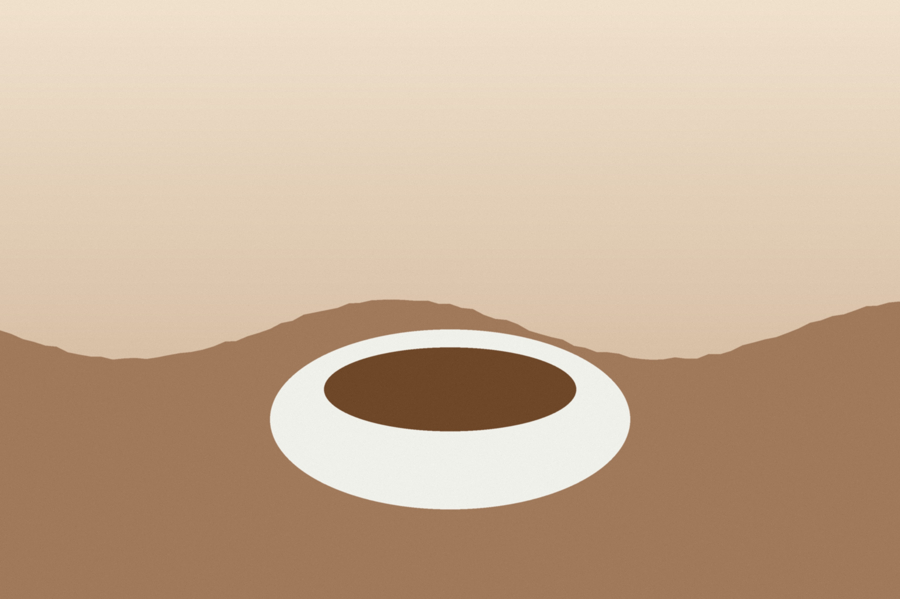

Den här sidan är medvetet tung. Bilderna visas högst 400 pixlar breda men är mycket större än så.

Kvarnen byggdes 1887 och blev kafé hundra år senare.

Vi rostar våra bönor själva varje vecka.
Sommarkvällar har vi öppet till solnedgången.